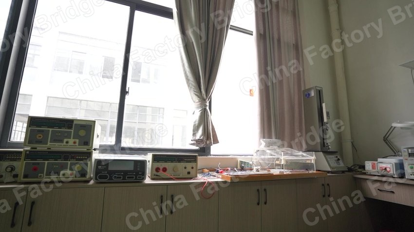
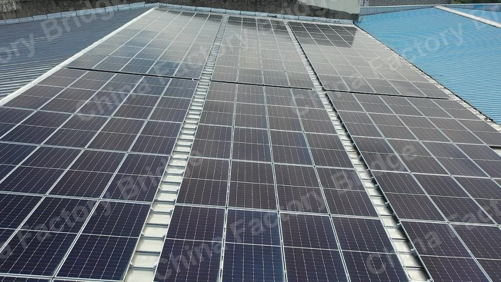
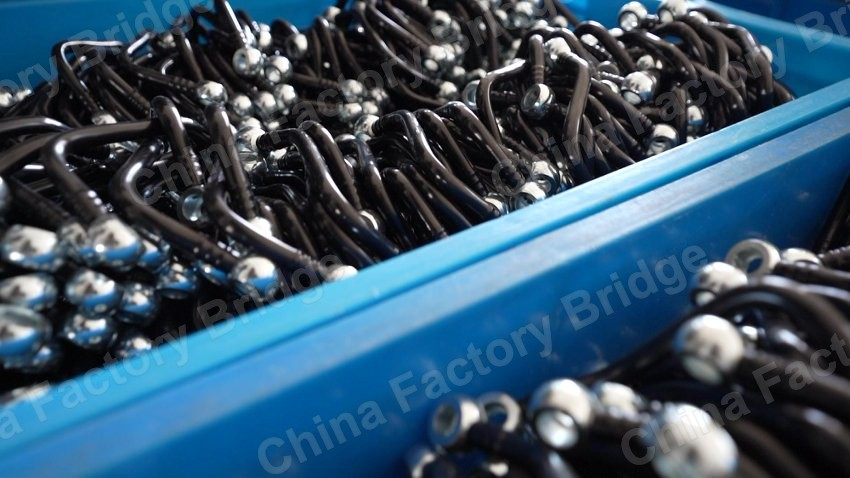

FACTORY BRIDGE · FIELD MATERIALS
格物集
工厂桥梁、实地素材和海外买家沟通。
把工厂现场和产品情况先讲清楚。
我拍过上千家江浙沪企业，也在整理更适合海外买家理解的工厂资料。
这里先放工厂端、买家端和真实现场素材。



Factory Bridge
Factory Bridge
把工厂现场、产品情况和买家容易问的问题先说清楚。
Field Materials
真实企业现场素材
车间、实验室、设备、产品细节和企业环境，用真实现场补足纸面介绍说不清的部分。
Lab
Gewuji Lab
Small web tools and experiments from Gewuji Lab.
About
把小想法做成能被看见的东西
45 岁以后，我越来越觉得，人生最重要的不是拥有多少东西，而是还能保持多少热爱。
喜欢骑车，不是为了速度，而是为了风吹过头盔那一刻的自由。喜欢咖啡，不只是为了提神，而是享受从生豆到烘焙、从研磨到萃取的过程。
喜欢摄影，不是为了器材，而是想把那些转瞬即逝的时刻留住。喜欢 3D 打印，不是因为技术本身，而是把脑海里的想法一点点变成现实。
喜欢电影和音乐，因为它们总能在某个瞬间，与自己的经历产生共鸣。喜欢折腾电脑、AI 和各种新工具，因为我始终相信，好奇心才是对抗年龄最好的方式。
当然，还有陪伴我生活的德文卷毛猫，和最重要的家人。两个儿子、一位妻子，一起旅行、一起成长、一起经历生活里的平凡与惊喜。
这些看似毫不相关的兴趣，最终拼凑成了现在的我。热爱生活，认真创造。探索、成长、分享。希望未来的很多年里，依然能够保持热爱，持续折腾，继续出发。

FAQ
常见问题
给搜索引擎、AI 搜索和第一次访问的人一个更清晰的项目说明。
格物集是什么？
格物集是老曹的主网站，重点放工厂桥梁、真实企业现场素材和海外买家沟通。
Factory Bridge 是什么？
Factory Bridge 是格物集下的主业务项目，面向海外买家和中国工厂，帮助双方先把工厂现场、产品信息和基础问题讲清楚。
Field Materials 有什么用？
Field Materials 展示工厂实地照片、车间环境、实验室和产品细节，用来补充纯文字介绍看不到的现场信息。
以前的小工具还在吗？
还在，统一放到 Gewuji Lab / Tools 页面，不再放在首页核心位置。
Contact
合作、试用或交流
如果你是海外买家，或者是想改善对外资料的中国工厂，可以通过邮件联系我。
- 海外买家想先看清楚一点中国供应商情况
- 中国工厂想改善英文介绍、产品照片和对外资料
- 需要把真实企业现场整理成可沟通的内容